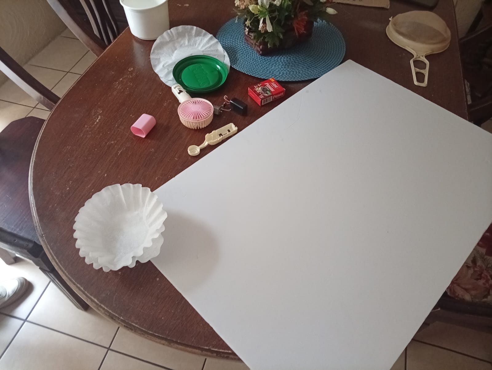
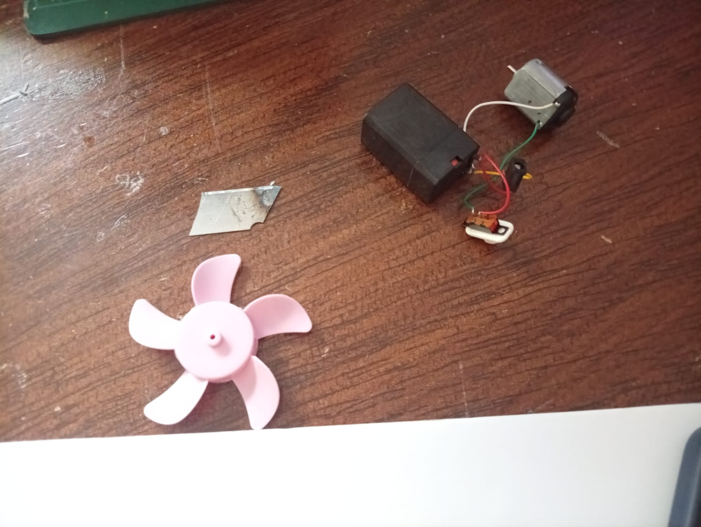
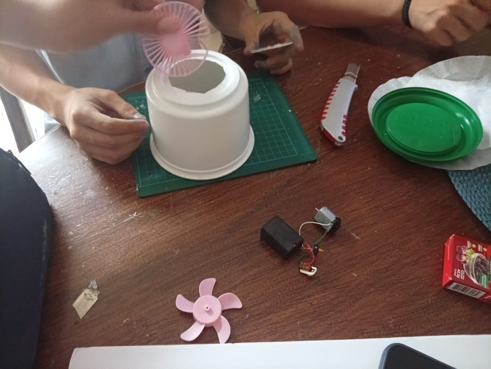
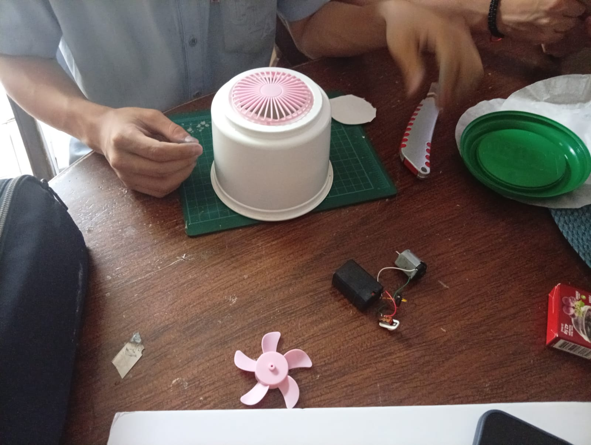
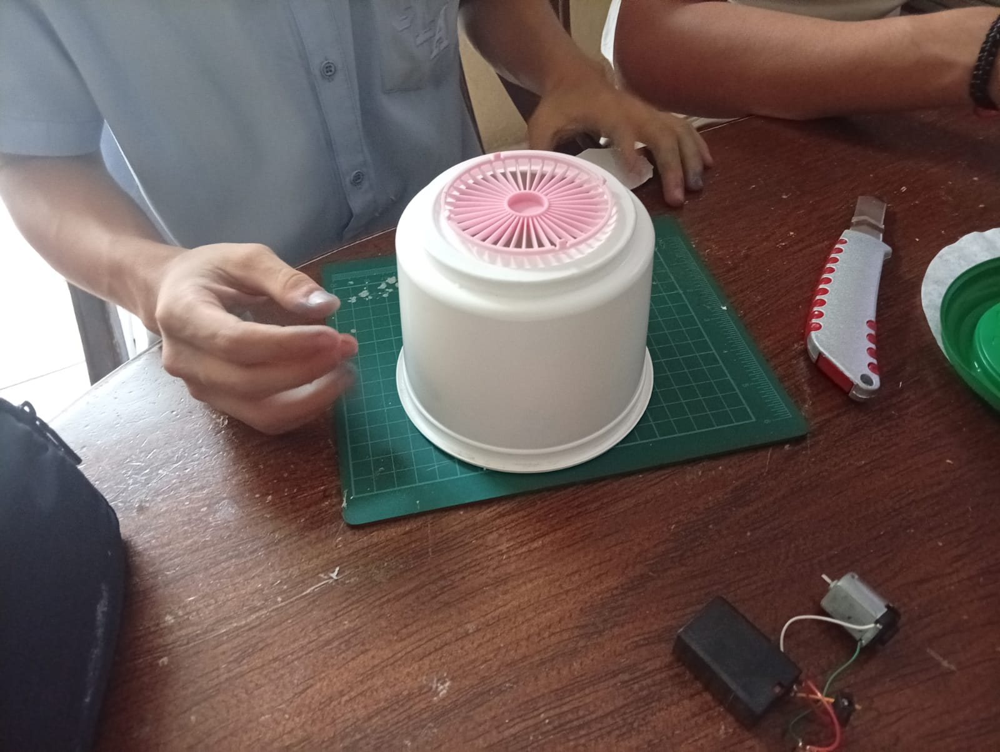
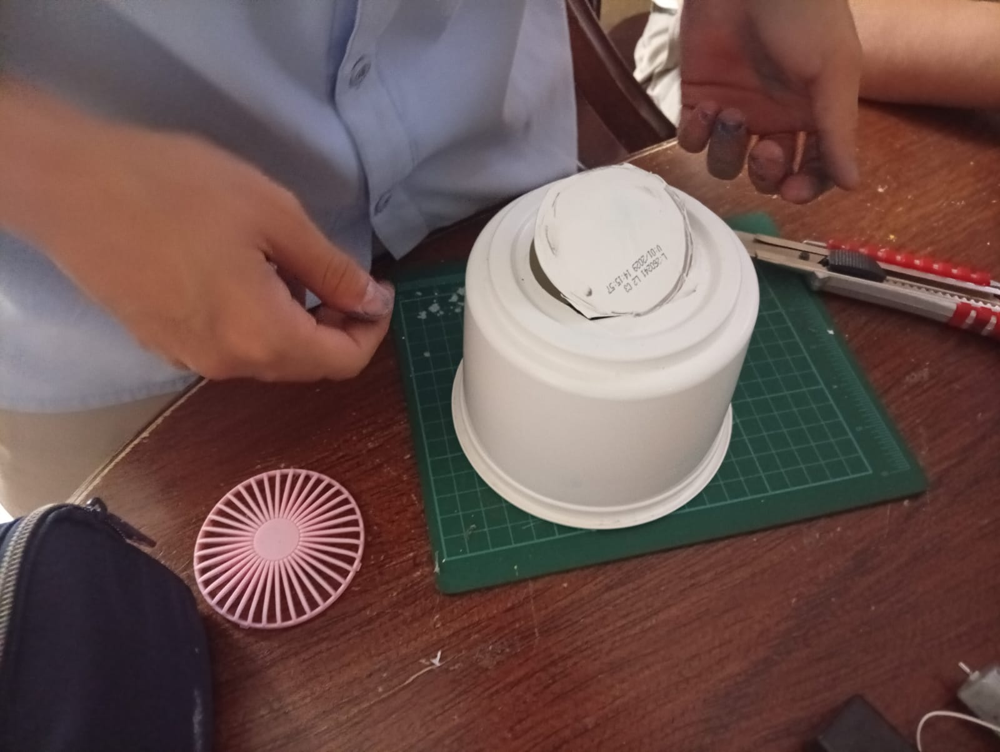

ETAPA 01
Inicio de la maqueta
Comenzamos a preparar la estructura que utilizaríamos para construir el prototipo.
Un proyecto científico del Colegio Las Américas que explora cómo podemos utilizar principios de física, filtración y movimiento del aire para reducir partículas contaminantes presentes en un ambiente.
El aire que respiramos puede contener polvo, humo y otras partículas. Nuestro proyecto busca demostrar de forma experimental cómo un sistema de filtración puede ayudar a disminuir estas partículas.
La calidad del aire influye en los seres humanos, animales y ecosistemas. Mantener ambientes más limpios es parte del cuidado de nuestro entorno.
El funcionamiento del sistema puede relacionarse con movimiento de fluidos, presión, velocidad del aire y filtración de partículas.
Mediante pruebas podemos comparar las condiciones del aire antes y después de utilizar el sistema de purificación.
El objetivo es construir y estudiar un purificador de aire y observar cómo cambia la cantidad de partículas presentes después del proceso de filtración.
Construimos el sistema de purificación utilizando un mecanismo de circulación de aire impulsado por motor, hélices y batería.
El aire ingresa pasando por un cernidor, papel filtro y una capa de carbón activado contenida en el envase de jabón.
El sistema mueve el aire hacia el filtro, donde parte de las partículas quedan retenidas.
Registramos los datos obtenidos y los comparamos con la condición inicial.
Determinar si nuestro sistema de purificación puede reducir la cantidad de partículas presentes en el aire de un espacio determinado.
Si hacemos pasar aire contaminado por un sistema filtrante, entonces la cantidad de partículas presentes en el aire debería disminuir.
Una recopilación de fotografías que documenta las etapas de preparación de materiales, montaje de componentes y elaboración de nuestro prototipo para la feria científica.

Comenzamos a preparar la estructura que utilizaríamos para construir el prototipo.

Acondicionamos el recipiente que serviría como parte de la estructura del sistema.
Preparamos las herramientas necesarias para trabajar en el ensamblaje de los componentes.

Incorporamos el motor y la hélice para impulsar el movimiento del aire.

Preparamos el papel filtro como uno de los materiales utilizados en la filtración.

Preparamos este material poroso para incorporarlo al sistema de filtración.

Continuamos trabajando en la construcción y preparación de las diferentes piezas.

Avanzamos en la integración de los elementos que conforman el prototipo.

Seguimos ajustando las piezas para completar la estructura del purificador.

Documentamos otra etapa del trabajo realizado durante la elaboración del proyecto.
Valores medidos durante las pruebas del prototipo.
| Tiempo | Partículas iniciales | Partículas finales | Reducción |
|---|---|---|---|
| 0 min | 100 | 100 | 0% |
| 5 min | 100 | 78 | 22% |
| 10 min | 100 | 55 | 45% |
| 15 min | 100 | 37 | 63% |
| 20 min | 100 | 25 | 75% |
Un purificador de aire combina conceptos de movimiento de fluidos, presión, flujo y filtración.
El aire se mueve debido a diferencias de presión. El ventilador crea una diferencia de presión que provoca que el aire atraviese el filtro.
La velocidad del aire afecta cuánto aire puede atravesar el sistema durante un determinado intervalo de tiempo.
Las fibras del filtro y el carbón activado pueden atrapar partículas mediante diferentes mecanismos físicos y químicas según su poro.
Modifica la velocidad del ventilador y la eficiencia del filtro para observar cómo cambia el comportamiento del sistema.
Ajusta los controles para ver el análisis de simulación en tiempo real.
Clases en Python diseñadas para diagnosticar la calidad del aire (AQI) e interpretar el estado del filtro HEPA.
Demuestra lo que has aprendido sobre el funcionamiento y la física del purificador de aire.
Estudiantes a cargo de la investigación, diseño y construcción del purificador de aire.

Estudiante

Estudiante

Estudiante

Estudiante

Estudiante
Docente
Docente
Docente